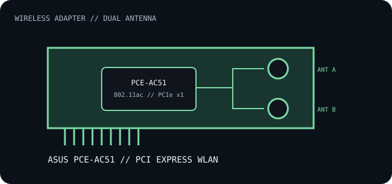

[ INDIVIDUAL COMPONENT // EXPANSION CARDS ]
ASUS PCE-AC51
Dual-band Wireless-AC PCI Express adapter for desktop hosts. Verify the exact board label and wireless-driver package before installing or moving the card.

IDENTIFICATION: PCE-AC51 is a Wi-Fi card model, not a generic AC51-family controller. ASUS public specification pages do not identify a single controller IC across all production lots; use the card's hardware label and PCI device ID when selecting a driver.
Specifications and compatibility
| Exact model / identifier | ASUS PCE-AC51 Wireless-AC PCI Express Adapter. |
|---|---|
| Controller / radio | Controller IC is not identified in ASUS's public product specification; verify the silicon/PCI ID on the installed revision rather than assuming a chipset. |
| Bus / host interface | PCI Express x1; the ASUS product description lists x1, x2, x8 and x16 slot fitment. Slot availability and firmware enumeration still depend on the host. |
| Wireless standards | Dual-band 802.11ac/n/a on 5 GHz and 802.11n/g/b on 2.4 GHz; specified maximum rates are 433 Mb/s at 5 GHz and 300 Mb/s at 2.4 GHz, not application throughput. |
| Ports / connectors | Two external antenna connectors with supplied detachable antennas; no wired Ethernet jack or Bluetooth connection is specified for this model. |
| OS / driver compatibility | Use the ASUS PCE-AC51 support downloads for the installed hardware revision and target Windows release. A PCIe slot alone does not guarantee an in-box driver or Linux support. |
| Revision / host caveat | Confirm PCB revision, antenna leads, bracket, PCIe slot clearance and supported driver before deployment. Regional packages and driver availability can differ. |
Installation and archival notes
- Attach both antennas and place them clear of the chassis; antenna orientation and nearby metal can change reception.
- Record the PCI vendor/device ID and the ASUS package version used. Do not infer the card's chipset from a similar ASUS adapter.
- Verify the host operating system, available PCIe slot, bracket height and driver signature before installation.
Manufacturer specifications and documentation
- ASUS — PCE-AC51 product overviewAdapter identity, dual-band feature description and PCI Express host interface.
- ASUS — PCE-AC51 technical specificationsWireless modes, peak band rates and package-level hardware information.
- ASUS — PCE-AC51 support downloadsRevision/region-specific driver and documentation availability.